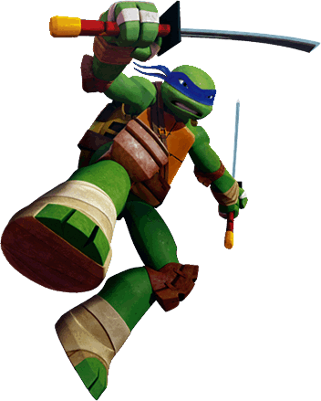
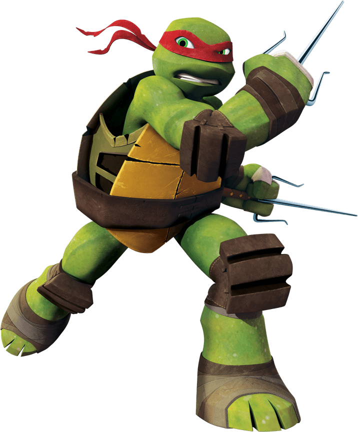
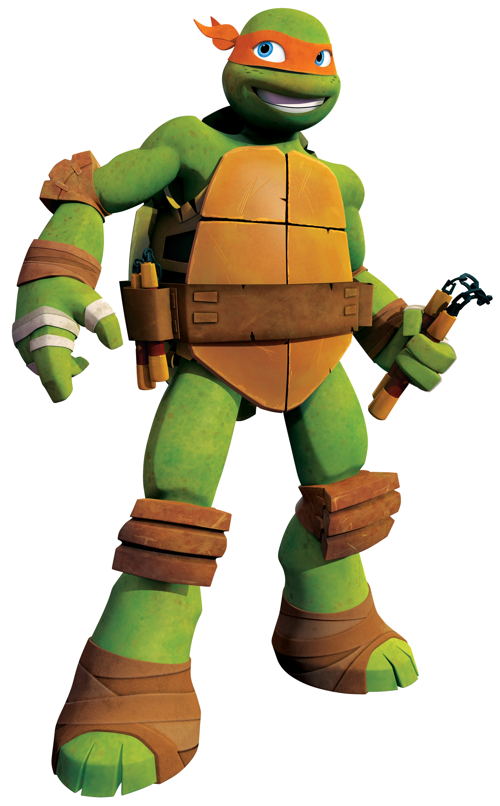

- 
- 
- 
-

- Leonardo
- Rafael
- Michelangelo
- Donatello
Donatello o Donnie, es el miembro de las Tortugas Ninja que usa el
antifaz morado. Se podría decir que él es el inteligente del grupo.
Siempre está pensando en avances tecnológicos y en muchas series o
películas, los presentan como un inventor de gadgets avanzados.